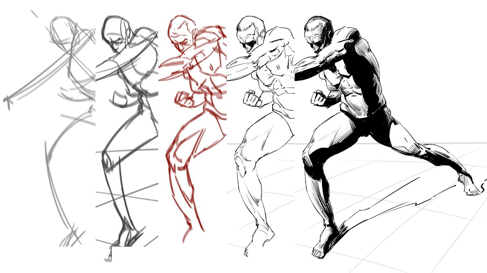
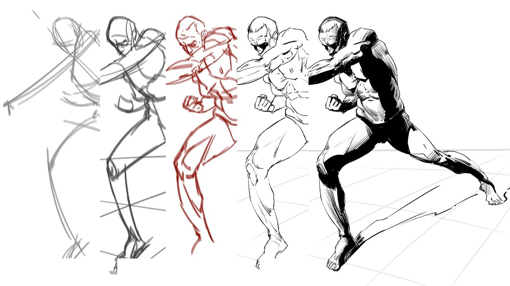

Hi there art enthusiast! I am Sherilyn and welcome to my personalized basic guide for drawing.
This guide will provide you with the essential knowledge and techniques to get started on your artistic journey.
In this guide, we'll cover the following topics
(choose your interest and click!)
Learn the foundations of human anatomy by exploring body proportions, skeletal structure, and simplified shapes to help you draw realistic figures.

Discover the basics of 1-point, 2-point, and 3-point perspective to create depth and accurate space in your drawings.

Master shading techniques like hatching, cross-hatching, and blending to add depth and dimension to your artwork.
 

Practice quick sketches that capture the energy, flow, and motion of the human body to improve your figure drawing.
“I sometimes think there is nothing so delightful as drawing.” - Vincent van Gogh